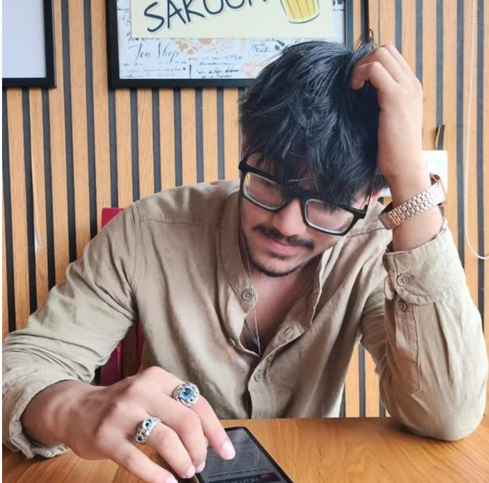

Raw data and half-built ideas come to me messy — I leave them working. Dashboards that hold up under real use, pipelines that don't break at 2am, full-stack tools built with equal parts curiosity and discipline. Currently a Data Analyst at Elixir Foundation, and a B.Tech IT student at Silver Oak.

What pulled me into IT wasn't the syllabus — it was wanting to know what's actually happening behind the screen. That same instinct is what makes data interesting to me: a spreadsheet full of numbers is just noise until you find the story it's telling, and then it's a decision someone can actually act on.
Based in Ahmedabad, I'm currently pursuing my B.Tech in IT at Aditya Silver Oak Institute of Technology, after completing my Diploma in IT in 2026. I now work as a Data Analyst at Elixir Foundation, applying that same instinct to real community impact instead of practice datasets. Every project is still a chance to get better at this — I'd rather hear the hard feedback early than ship something half-right.
My vision: to keep building solutions that are practical, meaningful, and genuinely help people.
Continuing on from my diploma, going deeper into software systems, data, and the fundamentals that sit under the tools I already use day to day.
Coursework in data structures, database management, statistics, machine learning, data mining, and web development — the foundation the CSR beneficiary data project and my first real Python pipelines came from.
Working on beneficiary and program data — cleaning, structuring, and analyzing it so the team can see what's actually working on the ground and make better decisions for the communities they serve.
Used Python, machine learning, SQL, and Power BI to extract actionable insights for business logic.
Ran data trend assessments for beneficiaries, making sure the tech actually served the community rather than just looking good on a dashboard.
Independent dashboards, SQL analysis, and Kaggle competitions on the side — where a lot of my Pandas, Seaborn, and query-optimization instincts got built through repetition.
Solid on the technical side, but none of it matters if I can't explain a finding to someone who doesn't touch SQL. Both halves get equal attention.
Kaggle · 2025
be10X · 2025
University of Helsinki & MinnaLearn · 2025
Three I'd put in front of anyone, and a handful of smaller builds below where I go to sharpen a specific skill.
AI-powered threat detection & IOC analysis dashboard
Security analysts need one place to see indicators of compromise across live feeds, not five disconnected tools.
A hybrid Python + React app for live cybersecurity monitoring — real-time camera feeds, automated IOC detection, ML-powered alerts, and role-based dashboards, built for security analysts and blue teams.
Flask/FastAPI backend serving a Vite + React + TypeScript frontend, with SQLite for storage and an analytics layer for live charts and alerting.
Data cleaning & impact tracking for community programs
Non-profits struggled to track the effectiveness of community support nodes due to highly unstructured, messy data profiles.
Built a data cleaning pipeline that normalized records, mapped delivery rates, and output clear trend visualizations.
Handling missing values in real-world sets taught me the importance of robust data imputation over simply dropping rows — this project is part of what led me into my current role at Elixir Foundation.
Real government data, honest findings — including a null result
State-level literacy and gender-gap data is scattered across government sources with inconsistent formats and real gaps (Telangana's 2014 split, missing exam records) that most write-ups paper over.
Built on real 2015-16 UDISE government school-census data with a documented derivation for every computed metric, a pytest suite validating each number against an independent manual calculation, and data gaps left as documented gaps instead of zero-filled.
Tested whether classroom crowding tracks exam pass rates, expecting a clean story. It didn't (r ≈ -0.13) — reported as a genuine null result instead of reframed until something correlated.
Smaller, self-directed builds — mostly where I practice a technique until it sticks.
Exploratory data analysis of 1,461 days of Delhi AQI readings — seasonal patterns, pollutant relationships, and publication-ready visualizations.
Interactive dashboard for global GDP trends — forecasting and country-by-country comparison, built on Flask with Plotly visualizations.
Interactive Streamlit dashboard for global COVID-19 data — KPIs, filters, charts, and country-level comparisons from Kaggle data.
Helped organize and run the Startup Mini Meetup Ahmedabad, the Ahmedabad Innovation Summit, and the FITAG Tech Expo 2026.
Coordinating speakers and facilitating smooth operations for community gatherings and tech meetups around Ahmedabad.
Using real UNESCO/UDISE data to ask where India's literacy gap is widest — and being honest when a popular assumption doesn't hold up.
Read on Medium →Why conversational AI, not another chart, is the next frontier for data analytics.
Read on Medium →A complete walkthrough of a Flask + Pandas + Plotly dashboard for exploring global GDP trends and forecasts.
Read on Medium →A comprehensive look at 1,461 days of Delhi AQI data (2021–2024) — trends, seasonality, and pollutant relationships.
Read on Medium →Building a real-time IOC detection and threat-monitoring dashboard with Python and React.
Read on Medium →Blockchain UX is broken in one crucial area — awareness. Here's the real-time alert system I built to fix it.
Read on Medium →Ruchir is an incredibly fast learner. During our group projects, he consistently showcased a positive attitude and was always open to receiving and implementing feedback. A true team player.
Organizing the Tech Expo with Ruchir was seamless. His ability to coordinate teams and manage event logistics while keeping everyone motivated is a rare leadership quality.
I'm currently seeking new opportunities and collaborations. Whether you have a question about my work, want to discuss a project, or just want to say hi — my inbox is always open.